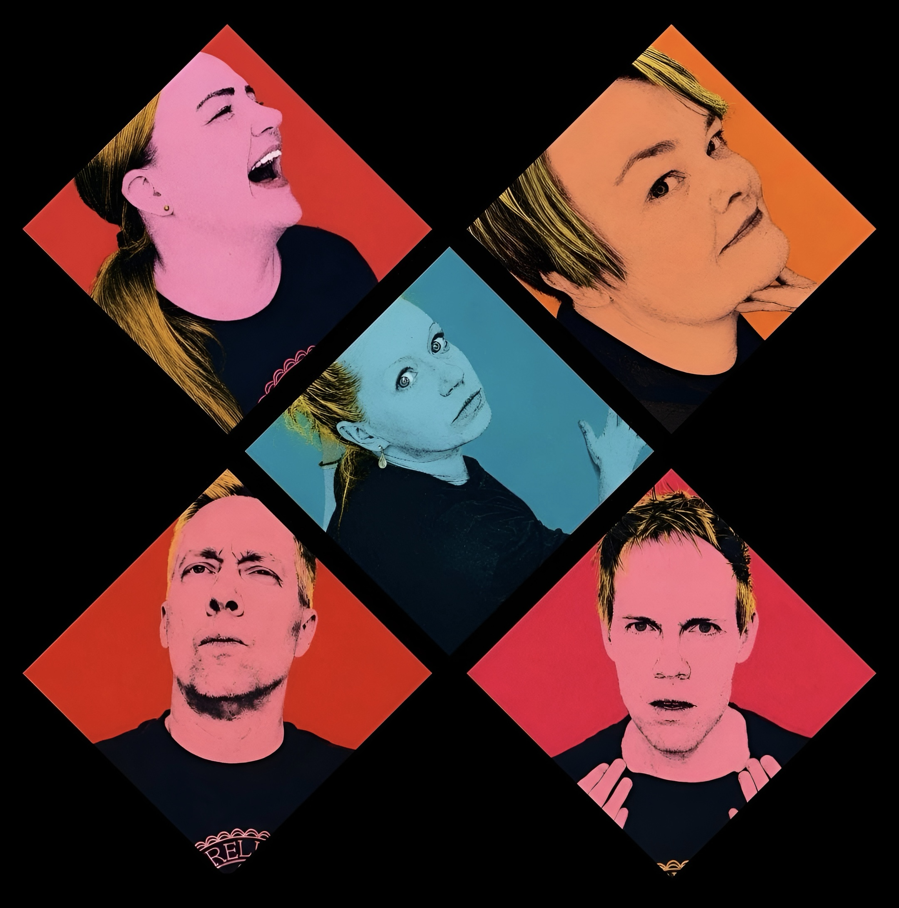
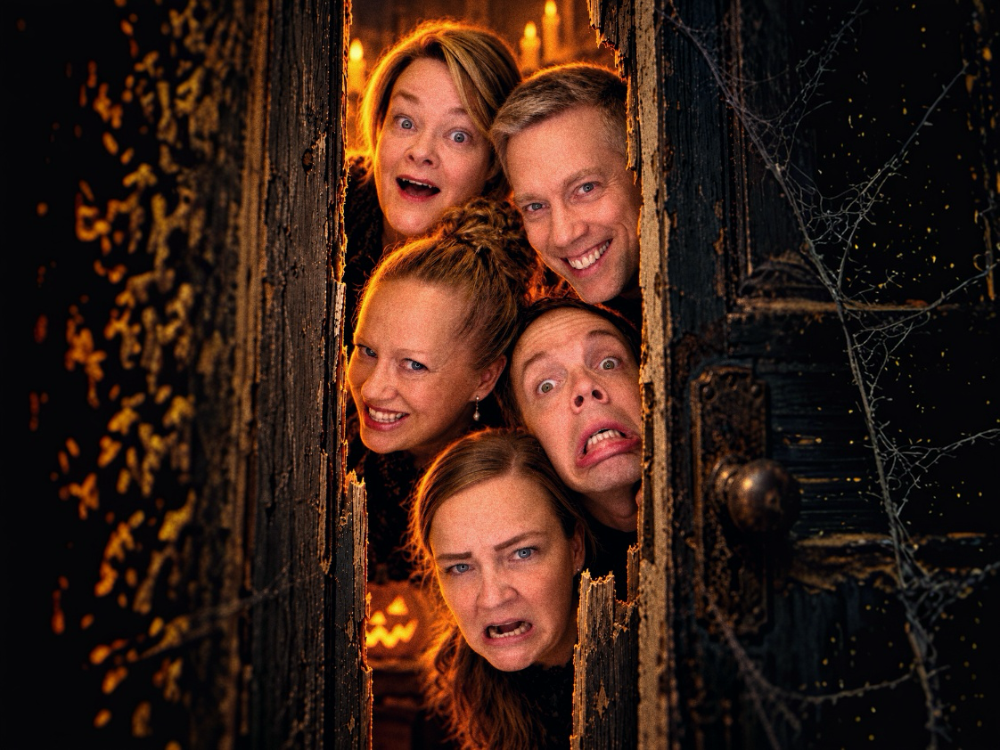
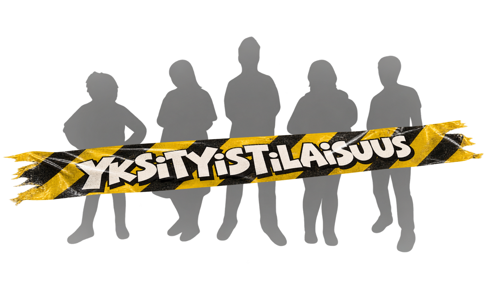

TULOSSA • 31.10. IMPRO HORROR – KAHVILA TYYNE, KANGASALA • TULOSSA • 4.11. RUNON RÄISKETTÄ – IMPROKLUBI VINTTI, TURKU • TULOSSA • 21.11. VAHANKO KIVAT IMPROILTAMAT – VAHALANDEN KULTTUURITALO, NOKIA •
TULOSSA • 31.10. IMPRO HORROR – KAHVILA TYYNE, KANGASALA • TULOSSA • 4.11. RUNON RÄISKETTÄ – IMPROKLUBI VINTTI, TURKU • TULOSSA • 21.11. VAHANKO KIVAT IMPROILTAMAT – VAHALANDEN KULTTUURITALO, NOKIA •
TULOSSA • 31.10. IMPRO HORROR – KAHVILA TYYNE, KANGASALA • TULOSSA • 4.11. RUNON RÄISKETTÄ – IMPROKLUBI VINTTI, TURKU • TULOSSA • 21.11. VAHANKO KIVAT IMPROILTAMAT – VAHALANDEN KULTTUURITALO, NOKIA •
Kureliivit ja jaloimmat reidet
Pirkanmaalainen improvisaatioteatteriryhmä

Tervetuloa Kureliivit ja jaloimmat reidet -kotisivuille!
Olemme pirkanmaalainen kokeneista
improharrastajista koostuva improvisaatioteatteriryhmä, joka on
perustettu vuonna 2023.
Kureliivien improlle on ominaista energisyys ja esitysten
rakentaminen tietyn teeman ympärille. Pyrimme löytämään
jatkuvasti uusia ja yllättäviä tapoja toteuttaa improa lavalla.
Jokainen esityksemme on ainutlaatuinen kokemus, joka syntyy
yleisön ja esiintyjien välisessä vuorovaikutuksessa.
Ajankohtaista
Impro Horror – eli kauheaa improvisaatioteatteria
Kahvila Tyyne · Ilkontie 8-10, Kangasala

Impro Horror palaa Tyyneen! Viime vuonna tupa oli täynnä karmivaa ilottelua, kun päästimme sisäiset demonimme ja vampyyrimme valloilleen.
Tänä vuonna saimme Halloweenin kunniaksi kahvilakummitus Tyyneltä luvan uuteen, entistäkin kamalampaan esitykseen, joka on lisäksi tuplasti pidempi. Mukaan on uskaltautunut myös muusikko Kusti Vuorinen.
Improklubi Vintti · Panimoravintola Koulu, Eerikinkatu 18, Turku
Kureliivit ja jaloimmat reidet tuo Turkuun Runon räiskettä!
Illan aikana yleisö saa haastaa näyttelijät venyttämään
lyriikan rajoja.
Esityksessä kuullaan improvisoituja runoja, runon
selitystä, taipuisia riimejä ja sanoilla leikittelyä.
Luulitko, että runous on tylsää? Tule katsomaan,
miten Kureliivit sen tekee!
Lisätietoja myöhemmin.

Vahanko kivat improiltamat
Vahalanden kulttuuritalo · Sarkolantie 476, Nokia
Vahalanden kulttuuritalon marraskuuta ilahduttavat Improiltamat. Vahanko kivaa!
Perinteisten iltamien tapaan luvassa on puhetta, laulua, runoja ja sketsejä – kaikki improvisoiden, ilman käsikirjoitusta ja yleisön ehdotuksista ammentaen. Menossa mukana on myös muusikko Kusti Vuorinen.
Esitys sopii kaikenikäisille. Kulttuuritalon kahvila palvelee yleisöä ennen esitystä ja väliajalla.
Liput 10 € (alle 12-vuotiaat ilmaiseksi).
TERVETULOA!
Rouheita riimejä: runo- ja musaimproilta
Vastavirta-Klubi · Pispalan valtatie 39, Tampere
Tapahtuman tarkemmat tiedot julkaistaan myöhemmin.
Huvi La Runo
Tahmelan Huvila · Uramonkatu 9, Tampere
Tapahtuman tarkemmat tiedot julkaistaan myöhemmin.
Liput 10 €.
ESITYKSEN NIMI
ESITYSPAIKKA · KATUOSOITE, PAIKKAKUNTA
Kirjoita tähän esityksen lyhyt esittely tai johdanto.
Kirjoita tähän tarkempi kuvaus esityksen sisällöstä.
Tähän voi lisätä esimerkiksi esiintyjät,
väliaikatiedot tai muuta käytännön tietoa.
Liput XX €.
Lipunmyynti, varaukset ja muut pääsytiedot tähän.
Tervetuloa!
Tehdyt keikat
Huvi La Runo, Tahmelan Huvila, Tampere, 17.2.2027
Rouheita riimejä - runo- ja musaimproilta, Vastavirta-Klubi, Tampere, 28.1.2027
Impro on parasta paikan päällä koettuna! Olemme esiintyneet kulttuurifestivaaleilla sekä erilaisissa yritys- ja yksityistilaisuuksissa.
Kaipaatko viihdykettä elämän huippuhetkiin tai piristystä arkeen?
Ota yhteyttä, niin suunnitellaan juuri sinun tarpeisiisi sopiva improesitys tai -koulutus!